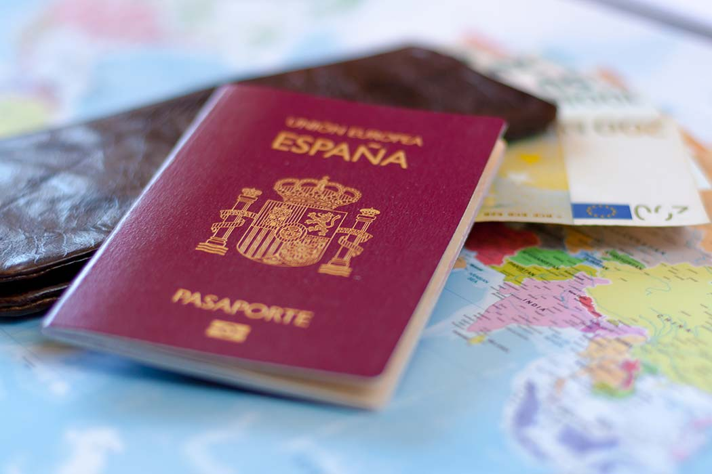

Requisitos y recomendaciones
1. Pasaporte en vigor
El pasaporte español es válido para viajes inferiores a 90 días sin visado.
2. Billetes de vuelta
Es obligatoro disponer de una prueba de salida o billete de avión.3. Visita "Japan web"
Recomendamos encarecidamente registrarse en la plataforma oficial Visit Japan Web antes de viajar para obtener los códigos QR que facilitan y aceleran los trámites de aduanas y control de inmigración.4. Internet
Compra una eSIM o una tarjeta SIM de datos para tener conexión móvil desde el primer momento.